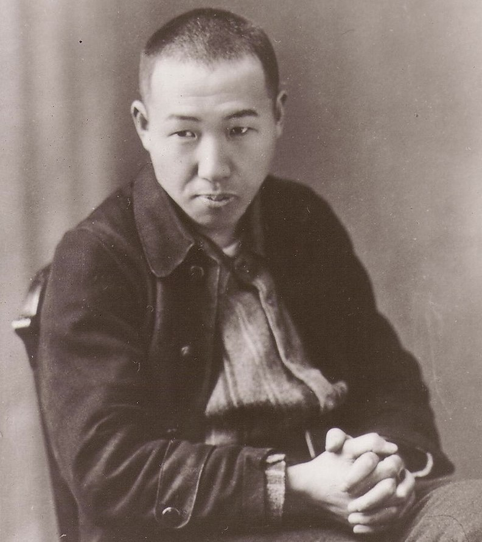

大谷翔平
岩手県水沢市(現：奥州市)出身のプロ野球選手(投手、外野手)。右投左打。MLBのロサンゼルス・エンゼルス所属。
投手としても打者としても活躍する「二刀流」の選手として広く知られる
岩手県水沢市（現在の奥州市）に、社会人野球の選手だった父・大谷徹とバ
ドミントン選手の母を持つスポーツマンの両親の家に、三人兄弟の末っ子として生まれる
翔平という名前は、父が地元の奥州平泉にゆかりのある源義経
にちなんで、義経の戦うと飛ぶイメージから「翔」の字を用い、平泉から「平」を取って名付けられた。
芥見下々
少年時代から『週刊少年ジャンプ』(集英社)の愛読者であり、特に長期連載された『BLEACH』の大ファンであった。
転校先にジャンプ好きの同級生がおり、そのグループらと絵を描くうちに漫画家になる夢を意識し始める(小学5年生頃)。
その後もアマチュアとして漫画を描き続けていたが、高校卒業後の進路でプロの漫画家を志望。
持ち込み作品の投稿先が『週刊少年ジャンプ』か『月刊アフタヌーン』（講談社）の二択であったが慣れ親しんだジャンプを選択し、
以来現在まで集英社との縁が続くようになった。
宮沢賢治

仏教(法華経)信仰と農民生活に根ざした創作を行った。作品中に登場する架空の理想郷に、郷里の岩手県をモチーフとしてイーハトーヴ（Ihatov、イーハトヴやイーハトーヴォ(Ihatovo) 等とも)
と名付けたことで知られる。彼の作品は生前ほとんど一般には知られず無名に近く、没後、草野心平らの尽力により作品群が広く知られ、世評が急速に高まり国民的作家となっていき、今でも日本には広く愛好者が存在する。